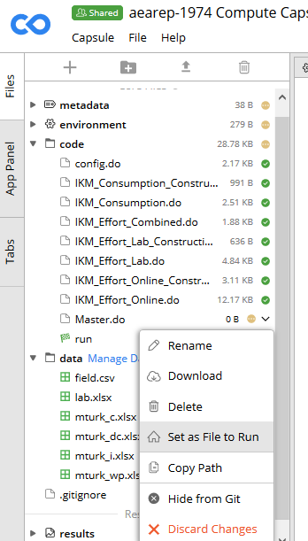

E Access to Computers
You will be working on a variety of computers
- your laptop (Windows, OS X, Linux) to access the various resources
- a computer to run the code
- your laptop (but not necessarily)
- a Windows remote desktop at CISER (Login instructions)
- possibly a Linux cluster
- WholeTale (experimental)
- CodeOcean
- Github Codespaces (experimental instructions)
- Bitbucket
E.1 General guidelines
E.1.1 What can you do where
In principle, assuming you have the necessary software, you can work on any computer. Just remember to git push all changes back to Bitbucket.
E.1.2 Where is the data
We are currently exploring how to make the data mobile. At present, we do not want the data in Bitbucket, so you will need to re-download the data on each computer you intend to run programs. So you should decide on one particular computer. You can edit documents and code anywhere else, but again, remember to git push any changes from your other computer, and to git pull on your compute computer.
E.1.3 What software
By default, you should expect to run the code on CISER, which has a broad selection of software.
If you actually have the software on your laptop, you should feel free to run code there, but see the caveat below. We will not purchase software for your personal laptop, and we do not provide you with a computationally capable laptop.
Some software is not available on CISER. If you encounter the following, you should check with your supervisor:
| Software | CISER |
|---|---|
| Dynare | Red Cloud Windows node |
| Fortran compiler | BioHPC linux cluster |
| C compiler | BioHPC linux cluster |
| Eviews | Not currently available |
Much statistical software loads data into memory. Your laptop has a limited amount of memory (in 2018, between 2GB and 8GB, rarely more). CISER nodes and BioHPC nodes can have between 256GB and 1024 GB of memory!
E.1.4 What if the code runs for a long time / I need to run to class / I need my life = Twitter back on my laptop
One of the advantages of running on the CISER or BioHPC nodes is that you can disconnect from the server, while leaving your programs running. That is one of the reasons to use them instead of your laptop.
E.1.5 Requesting Access
See setup checklist.
E.2 Reproducibility Checks in Codeocean
The workflow should be the same up until the verification stage, at which point you will use Codeocean to run the reproducibility check. You can access Codeocean from your personal computer or on CISER.
E.2.1 Create a Capsule
- First, create your own account on Codeocean using your cornell.edu email address (it’s free).
- In Codeocean, create a new capsule. Name the compute capsule as “
AEAREP-xxxx Compute Capsule for: TITLE” Example:
AEAREP-1974 Compute Capsule for: Waiting to Choose: The Role of Deliberation in Intertemporal Choice
- Share your CodeOcean capsule with
dataeditor@aeapubs.org(make sure to giveownershippermissions).
E.2.2 Environment
- Set up the environment specified by the authors. This includes software, version of that software, and any dependencies (packages).
Example:
Stata(16) with ssc packages estout and boottest
Environment
E.2.3 Recording the environment in Jira
In Jira,
- record the URL for the CodeOcean capsule (e.g.,
https://codeocean.com/capsule/1665863/tree) in the fieldComputing URL(Data Infotab) - record the use of CodeOcean in the
Computing Environmentfield (Data Infotab) (use the existing wordcodeocean) - record the
Working location of the dataas “Codeocean”
E.2.4 Files and Directories
There are only three directories in the Codeocean environment:
/data;/code;/results.- All paths in the code must refer to one of these directories.
- If the authors set their own globals, you change the globals to reflect these directories.
- If the authors do not use globals, you should use the
config.do(see instructions) to make the code more reproducible by setting globals in theconfig.doand amending the paths in the authors’ code. Example:use "D:\Dropbox\Data for paper\x.dta"becomesuse "$data/x.dta". - Modify the standard
config.doas follows:
local scenario "A" // line 35 global logdir "${rootdir}/results/logs" // line 59 // .... go to the very end global data "${rootdir}/data global results "${rootdir}/resultsOccasionally, other changes are also necessary, for instance, creating new directories.
Upload the code to the
/codeand the data files to the/datadirectories in Codeocean.Define the default
runfile using the right-click menu for the main do file. This will create a new file (calledrun) which is a Bash script that CodeOcean uses to run all of the other code.run
Which file to use for the automatic creation of the
runfile depends on your manuscript:- If the manuscript has a single master file (e.g.,
master.do), use that. Therunfile will then look like
#!/usr/bin/env bash set -ex ## This is the master script for the capsule. When you click "Reproducible Run", the code in this file will execute. stata-mp -q do master.do "$@"- If the authors provide instructions on a specific order in which to individually execute programs, each program will need to be added to the “run” file in that order. In this case, you should be including the
config.doat the top of each program instead of only theMaster.do.
#!/usr/bin/env bash set -ex ## This is the master script for the capsule. When you click "Reproducible Run", the code in this file will execute. stata-mp -q do 01_step1.do "$@" stata-mp -q do 02_step2.do "$@" stata-mp -q do 03_step3.do "$@" stata-mp -q do 04_step4.do "$@"- If the manuscript has a single master file (e.g.,
E.2.5 Log files
- Any code that generates logfiles (this includes the
config.do) needs to be amended to write to theresultsdirectory (i.e.global logdir "${rootdir}/results"). - Note that CodeOcean automatically generates a capture of all screen output in a file called “
output” in theresultsdirectory. In many cases, this will be sufficient.
E.2.6 Output
- Nothing is captured unless it is explicitly exported to the
/resultsdirectory.- For example, you will not see any graphics files saved by the code unless they are saved as something such as
${results}/figure1.gph. - You may not need to do this for intermediate data files. The program(s) should still run as long as the files are successfully created.
- All tables and figures need to be adjusted to write to “
${results}”. The best way is to use a global (yet again defined in theconfig.do), e.g.graph export "${results}/figure1.pdf".
- For example, you will not see any graphics files saved by the code unless they are saved as something such as
E.2.7 Notes
- Note that some features will not work on CodeOcean if they rely on graphical windows (see LINK TO CODEOCEAN SITE)
- A particular feature missing from Stata 16.0 on CodeOcean is the ability to write PNG graphics. Write PDF instead.
E.2.8 Recording edits
- Once you have finished editing and running the code in Codeocean, you should download the edited code and commit it to the repository. The best way to do this is similar to the steps taken during a revision (LINK TO INSTRUCTIONS FOR REVISION). Delete, by hand (NOT git rm), the code files as you downloaded them onto your workspace. Then, place the amended codes into that same directory. Git
add, commit, push. We should then be able to identify the changes you made to the code in order to run it on Codeocean. See further guidance here.
E.2.8.1 Expert tip
Instead of manually downloading CodeOcean results, in a (git) bash shell on your laptop or CISER, cd to the base directory of the reproducibility check (e.g., “aearep-xxxxx”), and run
tools/sync-codeocean.sh nnnnnwhere nnnnn is the numerical capsule identifier from the CodeOcean URL: https://codeocean.com/capsule/ nnnnnn /tree. You will be asked to authenticate using your CodeOcean (not Bitbucket!) login and password!
This will create two directories in your workspace: codeocean-nnnnn-live and codeocean-nnnn. The former will be “ignored”, but the latter will be refreshed each time you run the sync-codeocean.sh command, and will be committed to the Bitbucket repository. This is a convenient way to synchronize the two.
Don’t forget to git add; git commit; git push afterwards. This command can be run multiple times, as changes are made on CodeOcean.
E.2.9 Recording results
- Download the
/resultsdirectory as a ZIP file. Remember the “run” number from the CodeOcean interface (e.g. “Run 1234567”). - If not already present, create a “results” directory in the
codeocean-nnnnndirectory. - Create a directory for each run with the “run” number.
- Unzip the ZIP file you just downloaded into the numerical directory you just created.
This should look like this:
aearep-1234/
codeocean-nnnnn/
code/
metadata/
results/
2931206/
output
logfile_20220201-1201-root.log
figure1.pdf- Don’t forget to add all results from the “results” directory,
git add; git commit; git push.
E.3 Conducting reproducibility checks on WholeTale
See instructions (experimental)
E.4 Computing using Github Codespaces
(coming, for now, see https://github.com/labordynamicsinstitute/replicability-training/blob/master/draft-codespaces.md)